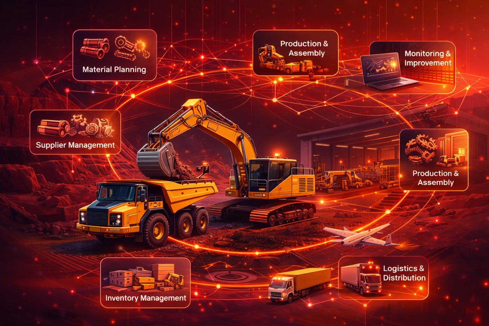

Kami mengintegrasikan supply chain canggih dengan manufaktur alat berat ramah lingkungan
Di Abizaros TerraDrill kami berkomitmen mendorong keberlanjutan lingkungan melalui penerapan green manufacturing dan prinsip circular economy yang terintegrasi di seluruh rantai nilai produksi.
Learn More
Integrasi penuh dari perencanaan material hingga distribusi dengan teknologi IoT real-time.
Produksi alat berat low-emission dengan CNC precision dan automation canggih.
Peralatan electric dan hybrid dengan efisiensi energi hingga 40% lebih baik.
"Transformasi supply chain mereka meningkatkan efisiensi operasional kami sebesar 35%."
"Komitmen sustainability mereka nyata. Peralatan electric mereka mengubah cara kami beroperasi."